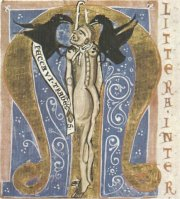
Jidáš v iniciále z latinského slovníku Mater verborum (Matka slov)
|
LATINSKÁ LITERATURA V ČECHÁCH
Přestože se nechal Bořivoj pokřtít na dvoře velkomoravského knížete Svatopluka samotným Metodějem, česká knížata upřednostnila latinskou bohoslužbu před staroslověnskou. Spolu s ní se na našem území rozvíjí i latinská literatura. Už v 10. stol. vznikají první legendy o českých světcích a od 12. stol. přibývají kroniky a další latinské texty. Na přelomu 13. a 14. stol. se začíná rozvíjet také literatura psaná česky a německy. Tyto tři jazyky přetrvávají vedle sebe až do doby národního obrození. Protože většinou neznáme autory textů, označujeme je tzv. incipitem (Crescente fide christiana), místem nálezu (Opatovický homiliář) nebo obecným údajem o autorovi (Mnich sázavský).
|
Historie
Český stát vznikl na konci 9. stol. Prvním historicky doloženým panovníkem byl kníže Bořivoj z rodu Přemyslovců. Konkurenční rod Slavníkovců nechal Boleslav II. v roce 995 vyvraždit. K nejvýznamnějším panovníkům patřila knížata Václav, Oldřich, Břetislav a králové Vratislav a Vladislav. V roce 1212 získal Přemysl I. Otakar natrvalo královskou korunu. Největšího rozmachu dosahuje české království za posledních Přemyslovců (1230-1306).
|
První latinské legendy o českých světcích navazují na legendy staroslověnské. O životě sv. Ludmily pojednává legenda Fuit in provincia Bohemorum (Byl v zemi české). Život sv. Václava popisují legendy Crescente fide christiana (Když se šířila křesťanská víra) a Oriente iam sole (Když vycházelo slunce). O sv. Vojtěchovi vypravuje legenda Versus de passione sancti Adalberti (Verše o utrpení sv. Vojtěcha) a o sv. Prokopovi legenda Vita minor.
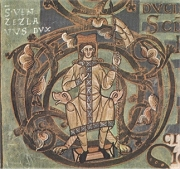
Svatý Václav
|
Legendy
Nejstarší čeští světci pocházeli z panovnického rodu. Byl to kníže Václav, kterého zavraždil jeho bratr Boleslav I. před dveřmi kostela, a jeho babička kněžna Ludmila (manželka Bořivoje), kterou nechala uškrtit vlastní snacha Drahomíra (žena Vratislava). Také druhý pražský biskup Vojtěch, který se vyhnul vyvraždění Slavníkovců, byl svatořečen, protože po odchodu z Čech zemřel mučednickou smrtí při šíření křesťanství v Prusku. Posledním světcem z této doby je zakladatel Sázavského kláštera Prokop.
Jde sice o historicky doložené osobnosti, ale jejich život popsaný v legendách byl přizpůsoben dobovému ideálu světce. Proto legendy nemůžeme považovat za skutečné životopisy.
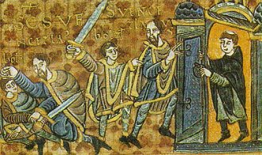
Zavraždění sv. Václava, Gumpoldova legenda
|
Čeští zemští patroni
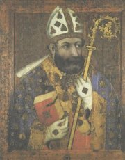
Mistr Theodorik: sv. Vojtěch
Které české světce a zemské patrony znáš?
Co o nich víš?
Jaké mají atributy?
|
Kristiánova legenda
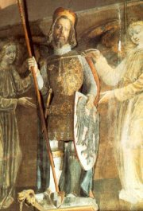
Česká státnost byla vystavěna na kultu sv. Václava. Původním znakem knížectví byla svatováclavská orlice, Karel IV. nechal zhotovit svatováclavské korunovační klenoty, podle pověsti povede sv. Václav blanické rytíře atd.
|
Kristiánova legenda
Incipit tzv. Kristiánovy legendy zní Vita et passio sancti Wenceslai et sancte Ludmile ave eius (Život a utrpení sv. Václava a báby jeho sv. Ludmily). Jejího autora neznáme. Výraz nomine tenus christianus znamená křesťan jen podle jména a s největší pravděpodobností není vlastním jménem. Sporná je i doba vzniku (10. až 14. stol.). Někteří vědci tuto legendu dokonce považovali za padělek.
Kristiánova legenda bývá označována jako první česká kronika, protože obsahuje řadu příběhů, které se nevztahují k sv. Václavovi ani sv. Ludmile. Začíná působením sv. Cyrila a sv. Metoděje na Velké Moravě a končí smrtí sv. Václava.
Charakterizuj osobnost sv. Václava.
Vyber z legendy motivy, které zřejmě neodpovídají historické skutečnosti.
Co píší o knížeti Václavovi historikové?
|
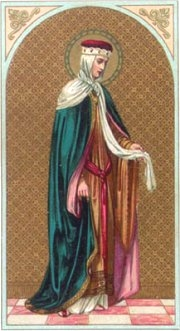
Babička sv. Václava sv. Ludmila prosila své vrahy, aby ji probodli mečem a prolili její krev, protože chtěla zemřít jako mučednice. Přestože ji schválně uškrtili, byla nakonec svatořečena.
|
Kosmas
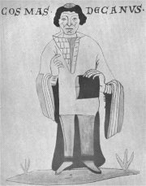
Pokračovatelé Kosmovi
Na Kosmovu kroniku navázali další letopisci. Kanovník vyšehradský popsal události z let 1126-1142, Mnich sázavský doplnil informace o slovanské liturgii, kanovník svatovítské kapituly Vincentius skončil rokem 1167 a opat Jarloch zachytil události do roku 1198. Žádný z nich se ale Kosmovi nevyrovnal.
Zbraslavská kronika
Vrcholným dílem latinského kronikářství je Chronicon Aulae Regiae (Zbraslavská kronika), kterou začal psát mnich Ota a dokončil ji opat Petr Žitavský. Popisuje dějiny Zbraslavského kláštera i českého království až do roku 1338.
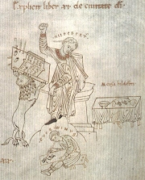
Myška ve skriptoriu
|
Kosmas: Kronika česká
Autor díla Chronica Boëmorum (Kronika česká) Kosmas (†1125) byl děkanem svatovítské kapituly, studoval v Lutychu a jeho družka se jmenovala Božetěcha. Kroniku českou tvoří tři knihy (první končí smrtí knížete Jaromíra roku 1038, druhá smrtí knížete Konráda). Kosmova kronika začíná potopou světa, vypráví bájné příběhy o příchodu praotce Čecha, o Libuši a Přemyslovi, dívčí válce, lucké válce a dále zachycuje českou historii až do autorovy smrti. Sám Kosmas rozlišuje bájivé podání starců, podání hodnověrných svědků a svoje vlastní zážitky. Vycházel také z dochovaných listin. Nejstarší české báje si ale zřejmě vymyslel a zpracoval je podle antických vzorů. Prózou psaná kronika obsahuje přes 200 veršů.
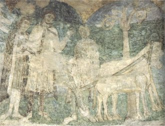
Přemysl Oráč, Znojemská rotunda
Další latinské rukopisy
Opatovický homiliář (kázání)
Pasionál abatyše Kunhuty (legendy, bohatě iluminováno)
Sedlecký antifonář (písně)
Mater verborum (slovník)
Vyšehradský kodex
Nařízení Břetislavova, Statuta Konráda Otty (právnické texty)
|
Kronika česká
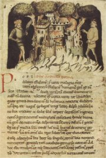
List z Kosmovy kroniky
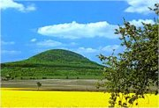
Kde přesně leží hora Říp?
Kde se nacházejí Stadice?
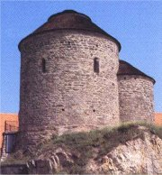
Ve znojemské rotundě sv. Kateřiny se nacházejí malby s výjevy z české historie (tzv. přemyslovský cyklus).
Které další románské stavby znáš?
|
Internetové stránky
FONTES RERVM REGNI BOHEMIAE, texty
Gumpoldova legenda, informace
Rotunda Znojmo, studie
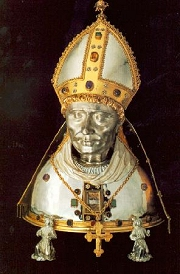
Svatý Vojtěch (relikviář)
|
Doporučená četba
Jirásek, Alois: Staré pověsti české
Kalandra, Záviš: České pohanství (2 svazky), Dauphin, Praha 2002
Karbusický, Vladimír: Nejstarší pověsti české, Mladá fronta, Praha 1966
Kosmas: Kronika česká, přel. Hrdina, Bláhová, Praha 1972
Králík, Oldřich: Nejstarší legendy přemyslovských Čech, Vyšehrad, Praha 1969
Králík, O.: Šest legend hledá autora, Mladá fronta, Praha 1966
Kronika zbraslavská, přel. E.Heřmanský, Praha 1976
Letopis Vincenciův a Jarlochův, přel. F.Heřmanský, SNKLHU, Praha 1957
Nechutová, Jana: Latinská literatura českého středověku do roku 1400, Vyšehrad, Praha 2000
Pasionál abatyše Kunhuty, Odeon, Praha 1975
Pokračovatelé Kosmovi
Sestra Múza, Světská poezie latinského středověku, Odeon, Praha 1990
Slavníkovci ve středověkém písemnictví, Vyšehrad, Praha 1987 (sv. Vojtěch)
Smích a pláč středověku, přel. D.Svobodová, Odeon, Praha 1987 (Gnómické verše, Žertovník, Zdoronezdvořák, Klaret: Hádankář)
Třeštík, Dušan: Kosmas, Svobodné slovo, Praha 1966
Třeštík, Dušan: Počátky Přemyslovců
Vančura, Vladislav: Obrazy z dějin národa českého
Žemlička, Josef: Čechy v době knížecí
Připrav si referát o některé z uvedených knih nebo internetových stránek.
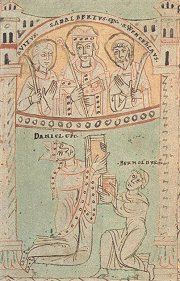
Vyobrazení biskupa Daniela a světců v rukopise Flores Bernardi
| |
|